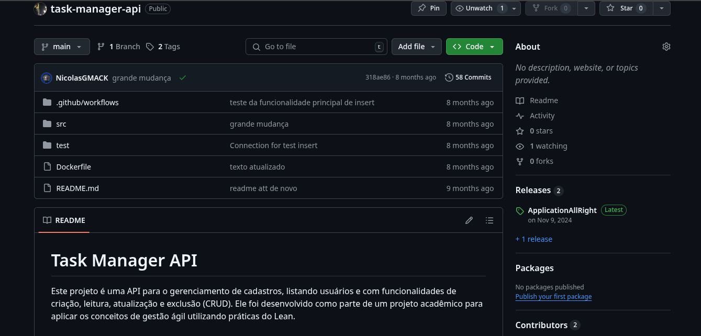

Finalidade do Projeto
Este projeto é uma API para o gerenciamento de cadastros, listando usuários e com funcionalidades de criação, leitura, atualização e exclusão (CRUD). Ele foi desenvolvido como parte de um projeto acadêmico para aplicar os conceitos de gestão ágil utilizando práticas do Lean.
Tecnologias Utilizadas
PHP: Linguagem de programação principal usada para criar a API. MySQL: Banco de dados para armazenar informações das tarefas. Bootstrap: Para estilização e componentes front-end simples. GitHub Projects e Issues: Ferramentas usadas para o gerenciamento do backlog e para organizar o fluxo de trabalho. Kanban: Metodologia de organização do trabalho com colunas para o progresso das tasks.
Considerações Finais
Com o resultado final, desenvolvi minhas habilidades como programador, aplicando conceitos não só conceitos tecnológicos, mas támbém conceitos de gestão ágil, o que proporcionou um desenvolvimento veloz e eficiente,juntamente com os conceitos de CI/CD. O projeto, também serviu como ideia de design para novos projetos posteriores.